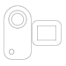
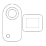
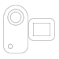

, um neues Videomaterial für einen Videoclip aufzunehmen. Wählen Sie
, um neues Videomaterial für einen Videoclip aufzunehmen. Wählen Sie  , um Bild aufzunehmen, oder , um Video zu machen.
, um Bild aufzunehmen, oder , um Video zu machen. Tippen Sie auf , um neues Videomaterial für einen Videoclip aufzunehmen. Wählen Sie , um Bild aufzunehmen, oder , um Video zu machen.